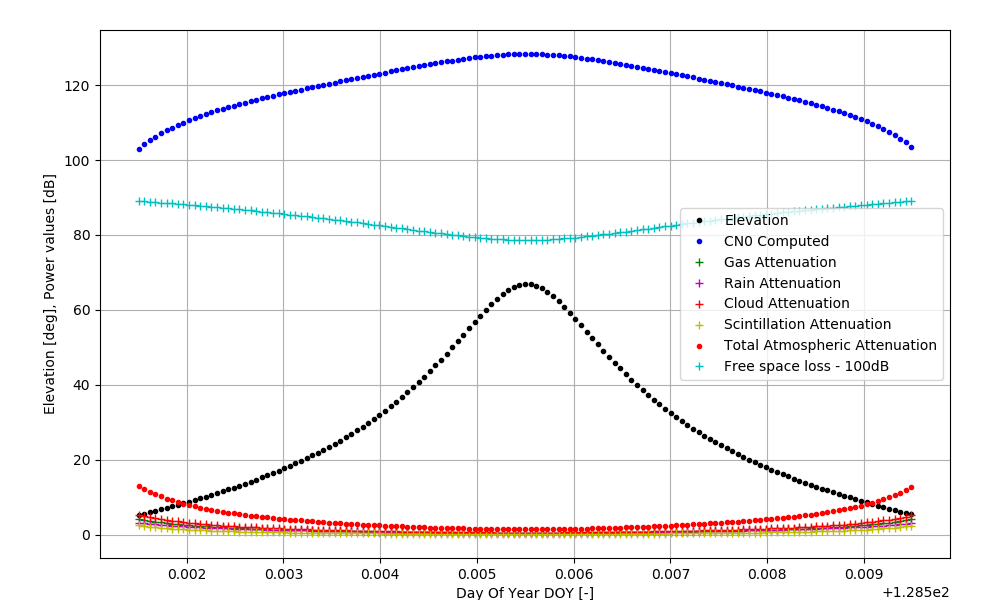
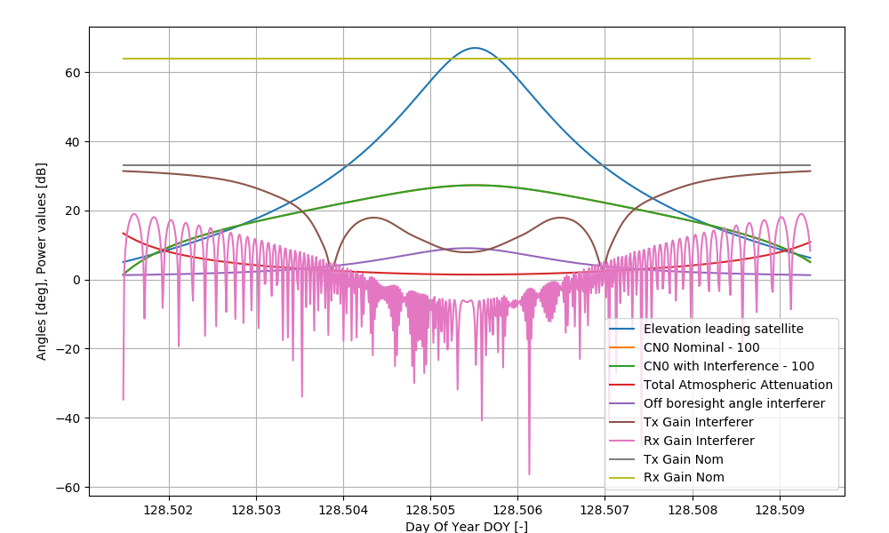

| StartDate | 2010-05-08 11:50:00 |
| StopDate | 2010-05-08 12:20:00 |
| TimeStep | 1 |
| IncludeStation2SpaceLinks | True |
| IncludeUser2SpaceLinks | False |
| IncludeSpace2SpaceLinks | False |
| OrbitsFromPreviousRun | False |
| OrbitPropagator | Keplerian |
| NumOfPlanes | 1 |
| NumOfSatellites | 1 |
| ConstellationID | 1 |
| ConstellationName | ROSEL |
| ReceiverConstellation | 1111 |
| ObsSwathStart | 325000.0 |
| ObsSwathStop | 585000.0 |
| SatelliteID | Plane | EpochMJD | SemiMajorAxis | Eccentricity | Inclination | RAAN | ArgOfPerigee | MeanAnomaly |
| 1 | 1 | 54465.0 | 7081289 | 0.00 | 98.157 | 188.934 | 0.00 | 0 |
| 2 | 1 | 54465.0 | 7081289 | 0.00 | 98.157 | 188.934 | 0.00 | 1 |
| Type | ConstellationID | GroundStationID | GroundStationName | Latitude | Longitude | Height | ReceiverConstellation | ElevationMask |
| Sentinel-1 | 1 | 1 | Svalbard | 77.8750 | 20.9752 | 0 | 1111 | 5 |
| Type | Latitude | Longitude | Height | ReceiverConstellation | ElevationMask |
| Static | 77.8750 | 20.9752 | 0 | 1111 | 0 |

| GroundStationID | 1 |
| TransmitterObject | Satellite |
| CarrierFrequency | 26.25e9 |
| BandWidth | 675e6 |
| TransmitPowerW | 50 |
| TransmitLossesdB | 5 |
| TransmitGainManualdB | (0.00, 33.18), (0.72, ... (120 values) |
| TransmitAntennaDiameter | 0.25 |
| ReceiveAntennaDiameter | 6.8 |
| ReceiveGainManualdB | (0.00, 64.24), (0.05, ... (160 values) |
| ReceiveLossesdB | 3 |
| ReceiveTempK | 290 |
| PExceedPerc | 0.5 |
| IncludeGas | True |
| IncludeRain | True |
| IncludeScintillation | True |
| IncludeClouds | True |
